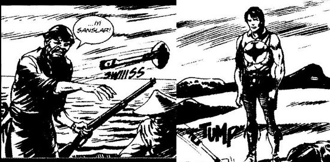

Ertesi gün işe gittiğinde masanın üzerinde sarı bir zarf buldu. Heyecanla titredi.
Sakın bu, o yazı olmasındı.
Şimdi açacaktı ve “Şef oldunuz” imza, bilmem ne amiri; “onay” daire başkanı; “olur” genel müdür.
Zarfı aldı bir yutkundu. Tam açacakken durdu. Ya şimdi açtığında bayılırsa ya da çığlık atarsa? Odadakiler yıllarca dalga geçerlerdi.
Zarfı cebine gizlice koydu, karşı masadaki Ayşegül Hanım’la göz göze geldiler. Daha doğrusu Ayşegül Hanım’ın hiç işi olmadığından gözü devamlı geliyordu da, Hıdır’ın göz onun gözü üstüne yerleşti. Hemen gözünü kaçırdı.
“En iyisi tuvalete gideyim, orada açayım, çığlık atarsam orada atarım” diye düşündü.
– Zehra Hanım mektup açacağınızı alabilir miyim?
– Niye kii?
Yuh! “Niye kii?” Abi bu soruya, bu soru mu sorulur? Mektup açacağınızı alabilir miyim? Niye ki? “Ki”yi de niye uzatıyorsa.
– Eğer manevi değeri varsa almayayım Zehra Hanım?
– Al kıız meraktan sorduydum.
– Zehra Hanım bana “kız” demeyin lütfen.
Odadaki tüm hanımlar gülüştü.
Mektup açacağını aldı, odadan bir kum yengeci kadar sessiz çıkarken askılığa çarptı. “Gümbürt!” diye bir ses, askılık yerde.
Sekiz kişilik odadaki yedi hanım bağrışarak gülmeye başladılar.
– Ben kaldırayım bir saniye.
“Sen kaldıramazsın, dur biz kaldırırız” dedi kızlardan birisi. Hepsi höykürdüler.
Hıdır kendini dışarı attı.
“Allahım niye ben? Bu Zehra Hanım bile şef olduktan sonra ben niye olamıyorum? Hem bizim dairede niye hiç erkek yok? Niye niye?”
Tuvaletin kapısını açtı; iyi, kimse yok. Hemen bir kabine girdi. Mektubu ve parlak renkli mektup açacağını çıkardı. Gümüş açacağa şöyle bir baktı. Küçük bir fabrika açmak için 50’ye yakın onay alması gereken Çorumlu bir iş adamı, bir yıl onayları halledemeyince 50 tane gümüş mektup açacağı yaptırmıştı, onaylar 50 saatte tamamlanmıştı.
Heyecanla mektubu açtı, açıkçası elinin titremesine engel olamıyordu. Aslında hala oğlu Seyfi, hükümetteki partide teşkilatlardan sorumluydu. Bir telefonla bırak şefliği, daire başkanı olurdu ama neyse.
Girişi okudu:
Sayın Hıdır Azgören;
“Allahım Allahım!”
İhtiyaç nedeniyle APK Dairesi’ne memur olarak atandınız.
Genel Müdür Vekili bilmem kim...
...
Flop!..
Hepiniz “flop” sesi ne dediniz ya...
O mektup açacağının sesi.
Klozetin içine düştü.
“John, ama içimden bir komut aldım, bir ses bana kaybettiğim kıvılcımı yeniden ateşlemek için spiritüel bir yolculuğa başlamamı söylüyordu” dedi. “Bu benim için olağanüstü bir özgürleşme dönemiydi.” [3]
